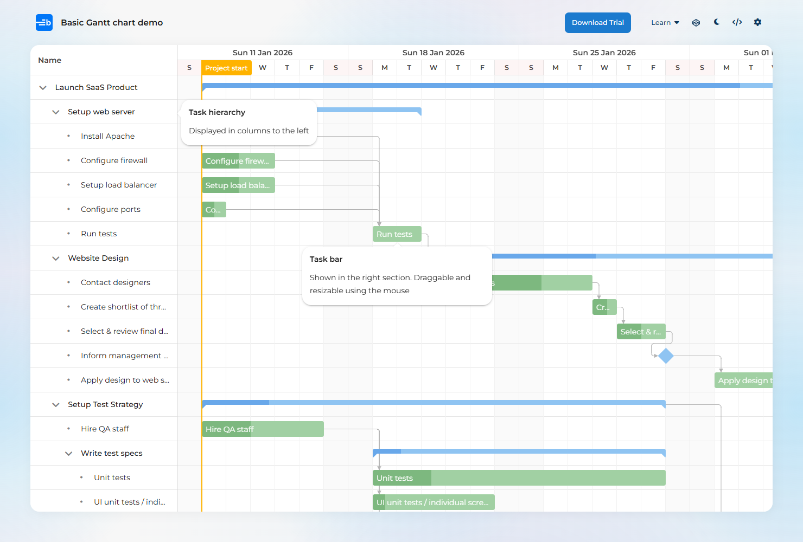
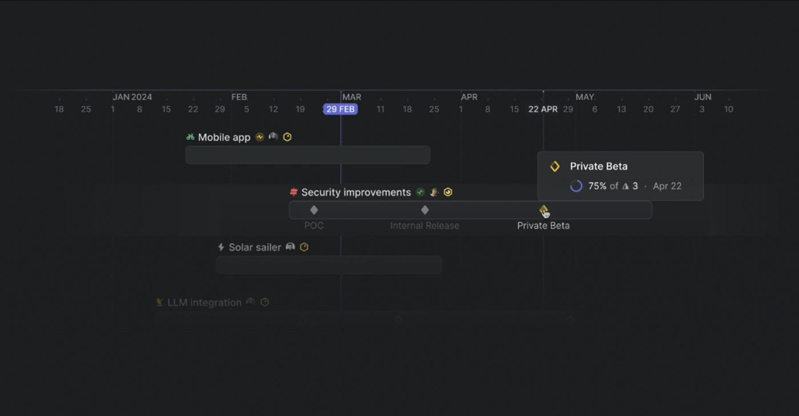

Số liệu thật của lệnh LSX26-0004 Bìa sách A5 (cụm với LSX26-0003 Ruột sách A5 64 trang) lúc 08/10. Ba phương án cùng giữ đủ thông tin của ngăn đang chạy, chỉ khác cách bày để một lần nhìn thấy hết, không phải cuộn. Ngăn vẫn rộng 1180px như mọi ngăn khác, vẫn có tab Chi tiết và Lịch sử phát hành.
Ngăn đang chạy to ở đâu (đo trên màn thật)
Mỗi khối là một thẻ có viền, đệm 14px, tiêu đề riêng, ô biểu tượng 34px: bảy thẻ chồng nhau nên cao gần gấp đôi màn hình.
Số chính 16 đến 20px ở mọi ô (Máy chạy, Ngoài ca, Dự kiến xong, Sản lượng đặt), không ô nào nổi hơn ô nào nên mắt không biết nhìn đâu trước.
Mỗi bước quy trình là một thẻ cao 70 đến 90px, giờ từng bước nằm góc phải, khoảng thời gian nằm dòng dưới. Bốn bước đã chiếm hết cột phải.
Thông tin cụm lặp ba lần: thẻ "Phát hành cùng nhau", dải xanh dưới bước Cắt thành phẩm, và dòng chữ ở chân ngăn.
Phương án A: hàng thuộc tính, bước là dòng bảng
Khuôn trang dự án của Linear: mọi thuộc tính dồn vào vài HÀNG, nhãn xám bên trái, giá trị là thẻ nhỏ xếp ngang. Không còn thẻ to.
Năm hàng: Lịch, Hạn, Thời gian, Đi cùng, Quy cách. Mỗi hàng cao 34px.
Thời gian còn một thanh mảnh chia màu và hai dòng chữ, bỏ hai ô số to.
Quy trình thành bảng dòng 36px: bảy cột thẳng hàng, so giờ các bước bằng một lần liếc dọc.
Dải "lệnh khác chờ bước này" thu thành một dòng chữ xanh dưới đúng bước đó, thẻ cụm riêng bỏ.
Linear, trang dự án: nhãn Properties, Labels, Resources bên trái; giá trị là chip một dòng. Học được: gom thuộc tính vào hàng thay vì mỗi thứ một thẻ.
Bìa sách A5
Có lịch, chưa phát hànhMở ở Kế hoạch sản xuất
LSX26-0004CÔNG TY CỔ PHẦN BIBICAĐơn DH002PO PO451263Phụ trách admin
Chi tiếtLịch sử phát hành
Lịch
T5 08/10 18:15→Xong T7 10/10 19:542 ngày 2 giờ−15 phút+15 phútHoàn táchoặc kéo thanh trên lịch
Hạn
Hạn xong sản xuất chưa cóGiao khách T6 06/11còn dư 27 ngày
Thời gian
Máy chạy 17 giờ 39 phút36%Ngoài ca 1 ngày 8 giờ64%2 đêm máy dừng giữa hai ca
Đi cùng
Phát hành cùng nhauLSX26-0003 Ruột sách A5 64 trangchờ lệnh này ở bước 4
Quy cách
1.000 cuốn350 tờ in4 con một tờ4 tấm kẽmGIẤY IVORY 210--230-250GSMcòn thiếu 2 mặt hàngNnguyenthihuyen
Quy trình sản xuất4 bướcGiờTừ đến
0Cắt tờMáy cắt tờ ITO 100175 tờ nguyên22 phútT5 08/10 18:15 đến 18:36
1Bài in 3 màu 4 màu (CMYK)Máy in 5 màu Mitsubishi 54×79350 tờ1 giờ 17 phútT5 08/10 18:36 đến 19:54
2Cán màngMáy cán màng 1080 số 1250 tờ16 giờT5 08/10 19:54 đến T7 10/10 19:54
3Cắt thành phẩmCơ sở Gia công Cán màng Thành Công250 tờGia công ngoàikhông tính giờLSX26-0003 Ruột sách chờ bước này xong mới vào bước 4 Xén 3 mặtMở lệnh
ĐóngLSX26-0003 xuống xưởng cùng lúcBỏ lịchPhát hành cả cụm, 2 lệnh
Phương án B: dải số một hàng, bước có thanh thời gian
Khuôn Gantt của Bryntum: bên trái là bảng tên việc, bên phải là thanh nằm đúng ngày giờ. Đưa thu nhỏ vào trong ngăn, chỉ cho riêng lệnh này.
Đầu thân là một dải năm ô số thấp 52px: Bắt đầu, Dự kiến xong, Tổng, Máy chạy, Hạn giao.
Mỗi bước một dòng 38px, cột cuối là thanh trên trục ba ngày: thấy ngay Cán màng chiếm gần hết thời gian và máy nghỉ qua đêm (vùng gạch).
Hình thoi cam ở cuối là chỗ lệnh Ruột đang chờ, bấm vào mở lệnh đó.
Cụm và Quy cách thành hai khối thấp ở đáy, mỗi khối một hai dòng.

Bryntum Gantt: cột tên việc bên trái, thanh theo ngày bên phải, đường nối phụ thuộc. Học được: so thời lượng các bước bằng mắt, khỏi đọc số.
Bìa sách A5
Có lịch, chưa phát hànhMở ở Kế hoạch sản xuất
LSX26-0004CÔNG TY CỔ PHẦN BIBICAĐơn DH002PO PO451263Phụ trách admin
Chi tiếtLịch sử phát hành
Bắt đầu
T5 08/10 18:15 −15+15
Dự kiến xong
T7 10/10 19:54
Từ đầu tới xong
2 ngày 2 giờ
Máy chạy
17 giờ 39 phút 36%
Hạn giao khách
T6 06/11 còn dư 27 ngày
Bước
SL
Giờ
T5 08/10T6 09/10T7 10/10
0Cắt tờMáy cắt tờ ITO 100
175
22 phút
18:15 đến 18:36
1Bài in 3 màu 4 màu (CMYK)Máy in 5 màu Mitsubishi 54×79
350
1 giờ 17 phút
18:36 đến 19:54
2Cán màngMáy cán màng 1080 số 1
250
16 giờ
3Cắt thành phẩmCơ sở Gia công Cán màng Thành Công
250
Gia công ngoài
LSX26-0003 chờ ở đây
Máy chạy trong caĐã vào máy, đang qua đêmNgoài ca 14:00 đến 22:00Lệnh khác chờ
Phát hành cùng nhau, 2 lệnh cùng đơn DH002
LSX26-0003 Ruột sách A5 64 trangchờ lệnh này ở bước 4 Xén 3 mặtMở
Quy cách và vật tư
1.000 cuốn350 tờ in4 con một tờ4 tấm kẽmGIẤY IVORY 210--230-250GSMcòn thiếu 2 mặt hàngNnguyenthihuyen
ĐóngBỏ lịchPhát hành cả cụm, 2 lệnh
Phương án C: một trục cho cả cụm, bước là mốc trên thanh
Khuôn dòng thời gian của Linear: mỗi dự án một thanh, các mốc là hình thoi có nhãn, rê vào mới hiện thẻ chi tiết. Ở đây mỗi LỆNH của cụm là một thanh.
Đầu thân là trục bốn ngày, hai thanh Ruột và Bìa, lệnh đang mở được viền đậm. Thấy ngay Ruột chờ Bìa 1 ngày 3 giờ (đoạn sọc vàng).
Bước là hình thoi tại lúc bước xong, nhãn tên ngắn bên dưới; rê vào hình thoi hiện thẻ máy, số lượng, giờ.
Dưới trục là ba cột thuộc tính chữ nhỏ: Lịch, Thời gian, Quy cách. Không còn thẻ bước riêng.
Gọn nhất trong ba, nhưng xem giờ từng bước phải rê chuột.

Linear Timeline: mỗi dự án một thanh, mốc hình thoi có nhãn, rê vào hiện thẻ nhỏ. Học được: thấy toàn cảnh trước, chi tiết để sau một lần rê.
Bìa sách A5
Có lịch, chưa phát hànhMở ở Kế hoạch sản xuất
LSX26-0004CÔNG TY CỔ PHẦN BIBICAĐơn DH002PO PO451263Phụ trách admin